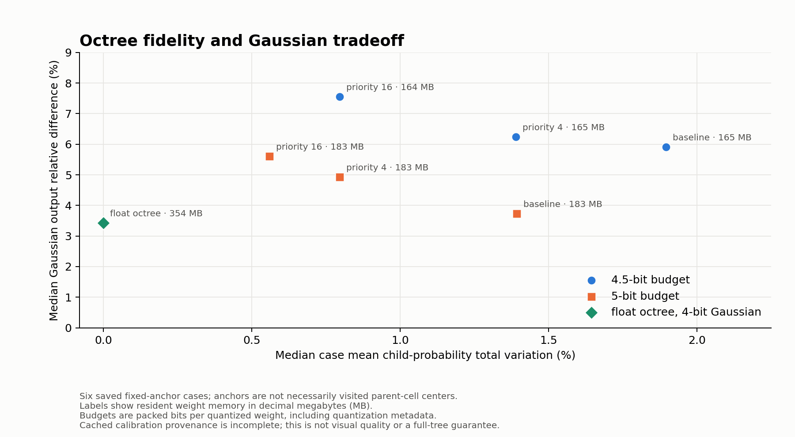
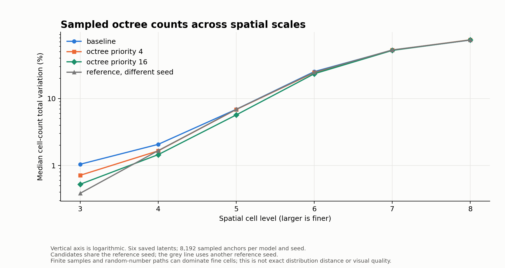
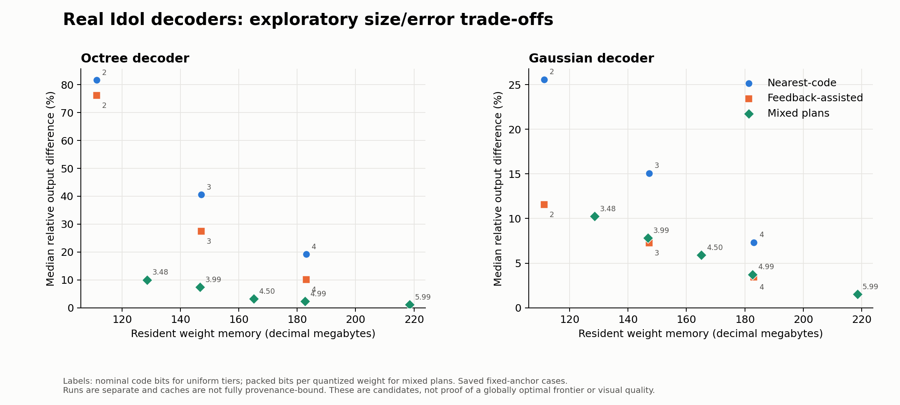
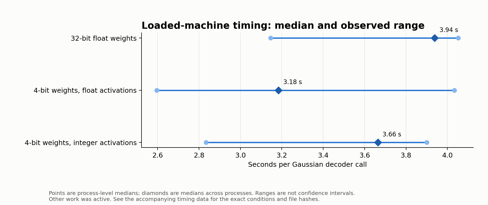

Benchmarks
For the complete image pipeline, see the 32-object eight-bit fidelity study. The results below are exploratory decoder-only measurements and do not measure the complete pipeline.
Real Idol decoders: exploratory results
These are local measurements, not a quality certification. Six saved latents supplied fixed anchors and references. Calibration and sensitivity caches were not fully bound to their inputs, so earlier-run provenance is incomplete. These tests do not measure image encoding, denoising, end-to-end generation, or visual quality. They do not establish globally optimal quantization.
Relative output difference is the Euclidean length of the output difference divided by the Euclidean length of the reference output. Percentages below are the median and largest difference across the six cases, not percentages of visual quality. The packed-bit figure includes quantization metadata and padding for the quantized weights; resident weight memory also includes the other runtime weights.
Octree-focused allocation
The following compares the eight-child probabilities at 2,048 saved anchor locations per case, using octree level 8. These are sampled anchor positions, not necessarily the parent-cell centers visited during tree construction. For each location, total variation is half the sum of the absolute probability differences. The table reports the median of each case's mean across six cases; lower is closer to the saved reference. The priority values weight the octree sensitivity proxy during allocation and are not measured quality scores.
| Budget | Octree priority | Resident weights | Child-probability difference | Gaussian output difference |
|---|---|---|---|---|
| 4.5 packed bits | 1 (baseline) | 165.12 MB | 1.895% | 5.905% |
| 4.5 packed bits | 4 | 164.99 MB | 1.391% | 6.240% |
| 4.5 packed bits | 16 | 164.47 MB | 0.796% | 7.548% |
| 5.0 packed bits | 1 (baseline) | 182.68 MB | 1.393% | 3.726% |
| 5.0 packed bits | 4 | 182.94 MB | 0.796% | 4.931% |
| 5.0 packed bits | 16 | 182.75 MB | 0.560% | 5.604% |
| Octree kept float32 | — | 353.90 MB | 0.000399% | 3.421% |
For the last row, all 62 octree tensors matched the current float export byte for byte; 98 Gaussian matrices were quantized. On one saved latent and one seed, sampled cell counts also matched the float decoder at all six tested scales. This does not establish behavior for every input, a different implementation, or visual quality.

The separate sampling test generated 8,192 anchors per model for each of the six saved latents. At cell level 3, median empirical count difference was 1.04% for the baseline and 0.52% for priority 16; the float model compared with a different seed gave 0.38%. At finer levels, differences were close to the different-seed comparison. Sampling paths can consume random numbers differently, so these are finite sampled-count comparisons, not exact distribution distances or visual-quality scores.

The sanitized octree aggregate data contains the plotted summaries. Calibration-cache provenance is incomplete; the probability-focused allocation objective is implemented but its real-model experiment has not yet been validated.
Construction comparisons
For five saved latents, each decoder generated 16,384 Gaussians at level 8. We compared Gaussian centers and six 128-by-128 orthographic preview views in a common coordinate frame. The preview renderer projects Gaussian covariance and composites opacity, but is an approximation with fixed framing, not the upstream renderer or a ground-truth image comparison. Foreground pixel difference is mean absolute color difference on pixels where either preview has opacity of at least 1/255. The table reports the median across the five cases of each case's mean across its six views. A different full-precision seed illustrates sampling variation, rather than a quality target.
| Candidate | Foreground pixel difference | Center voxel overlap |
|---|---|---|
| Float reference, different seed | 2.796% | 72.37% |
| Mixed 4.5-bit baseline | 2.637% | 71.95% |
| Mixed 4.5-bit, octree priority 16 | 2.520% | 72.25% |
| Float octree, four-bit Gaussian | 0.385% | 95.42% |
| Float octree, eight-bit Gaussian, nearest-code rounding | 0.107% | 98.74% |
Center voxel overlap is intersection over union of occupied center cells, with 32 cells per unit of the model's coordinates; Gaussian footprints are not considered. Sampling noise affects both the voxel and image comparisons. The source inputs are limited, and performance at 16,384 Gaussians does not establish behavior at larger output sizes. See the sanitized aggregate data and the comparison tools in the repository for definitions.
A subsequent six-case comparison used a newly calibrated eight-bit Gaussian candidate with 32-weight groups and an uncalibrated eight-bit candidate with 64-weight groups. Both keep the octree in 32-bit floating point. The calibration used 16 byte-disjoint latent files; their provenance and representativeness are not established by the hash check.
| Candidate | Median foreground difference | Worst view | Median center voxel overlap |
|---|---|---|---|
| Float reference, different seed | 3.053% | 5.503% | 70.06% |
| Float octree, calibrated eight-bit Gaussian | 0.0314% | 0.0596% | 99.79% |
| Float octree, uncalibrated eight-bit Gaussian | 0.1094% | 0.2217% | 98.70% |
As above, the first column of differences is a median of six case means over six approximate views each; worst view is the largest foreground difference across all 36 views. These are diagnostic previews of the same sampled latents, not a user study or a comparison against ground-truth objects. The aggregate data also records center distances and silhouette overlap.
Mixed-plan output differences
| Budget, bits per quantized weight | Actual packed bits | Resident weights | Octree median / worst | Gaussian median / worst |
|---|---|---|---|---|
| 3.5 | 3.481 | 128.59 MB | 10.00% / 12.84% | 10.24% / 12.66% |
| 4.0 | 3.988 | 146.77 MB | 7.37% / 9.46% | 7.81% / 10.53% |
| 4.5 | 4.499 | 165.12 MB | 3.18% / 3.73% | 5.91% / 8.25% |
| 5.0 | 4.989 | 182.68 MB | 2.33% / 2.71% | 3.73% / 4.59% |
| 6.0 | 5.988 | 218.52 MB | 1.15% / 1.35% | 1.52% / 3.87% |
Here MB means decimal megabytes, or one million bytes. Budgets of 2.5 and 3.0 packed bits per quantized weight were below the smallest available plan. These plans were chosen using an approximate sensitivity heuristic, then scored in the decoder runtime. The figures compare only the listed candidates.


In that loaded run the median Gaussian-decoder times were 3.94 seconds for 32-bit floating-point weights, 3.18 seconds for separately quantized 4-bit weights with floating-point activations, and 3.66 seconds with integer activations. The observed ranges overlap, so this sample does not establish a reliable speed winner. Peak process memory was approximately 1,355, 387, and 387 decimal megabytes respectively. The four-bit timing weights were prepared separately from the accuracy tiers.
Input and output summaries are available as mixed-plan results, loaded timing samples, four-bit arithmetic comparison, and finite candidate comparison. The plotting inputs for the earlier uniform-tier runs are nearest-code results, feedback-assisted results, and earlier timing samples.